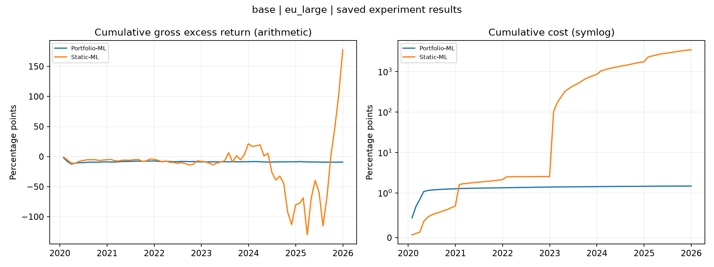

Original Static ML and default Portfolio ML only.
Status: available
Existing Keats outputs restored and organised only. No missing experiment was run. Keats test returns are 2020-2025; no separate unseen 2021-2025 holdout is claimed. Reference/preparatory statistics are not a completed iteration result.
Returns and costs are annual decimal fractions; leverage and turnover are ratios.
| strategy | role | months | first_return | last_return | annual_gross_return | annual_cost | annual_net_return | annual_gross_volatility | net_sharpe_paper | mean_leverage | mean_monthly_turnover |
|---|---|---|---|---|---|---|---|---|---|---|---|
| Static-ML | experiment | 72 | 2020-01-31 | 2025-12-31 | 0.29601 | 5.7489 | -5.4529 | 0.7801 | -6.9899 | 12.058 | 1.1243 |
| Portfolio-ML | experiment | 72 | 2020-01-31 | 2025-12-31 | -0.015302 | 0.0024574 | -0.017759 | 0.033078 | -0.53688 | 0.13573 | 0.017349 |
